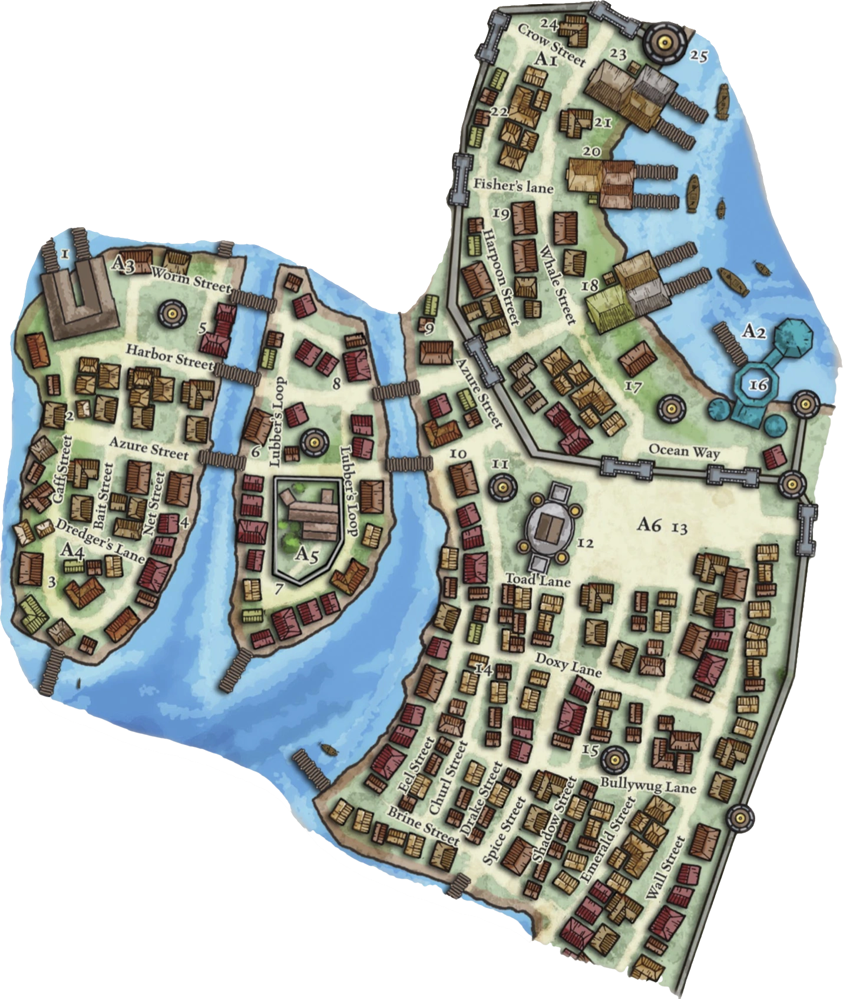

Sasserine
Quartier Azur
Présentation du quartier
Guilde des dragueurs de fonds
Un lieu à la réputation ambiguë, à mi-chemin entre entreprise maritime indispensable et repaire de charognards des profondeurs.
Les Filets de Nate
Un lieu où les aventuriers et pêcheurs de passage trouveront bien plus que du matériel.
La Dernière Gorgée
Une taverne discrète et enfumée, fréquentée par les marins.
Le Pélican Rouge
On y vient pour manger chaud, dormir sans se faire détrousser, engager un marin, retrouver un contact… ou entendre une rumeur avant qu’elle ne devienne nouvelle.
L'Antre de la Mouette
Bien plus qu'un simple lieu de plaisir, c'est un sanctuaire pour les âmes fatiguées.
Cathédrale Azur
Un sanctuaire de paix et de protection.
Guilde des Tatoueurs
Un lieu empreint de mysticisme et de tradition.
Guilde des Baleiniers
Un lieu central pour ceux qui s'intéressent à la mer et à ses périls.